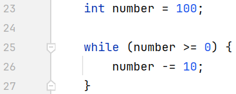

For loops are ideal when you know in advance how many
times you need to execute a block of code.
They are structured to include an initialization step, a condition check,
and an increment/decrement operation.
This makes them particularly useful for iterating over arrays or collections
where the number of elements is known.
This is a For loop example code.
While loops
While loops are used when the number of iterations is not predetermined.
Instead, the loop continues to execute as long as a specified condition remains true.
This makes while loops suitable for scenarios where the loop’s execution depends on
dynamic conditions, such as user input or the state of a program.

This is a while loop example code.
Do-While loops
Do-While loops are similar to while loops but with a key difference: the code block
inside a do-while loop is guaranteed to execute at least once. This is
because the condition is evaluated after the code block has been executed.